Caractéristiques de JavaScript
Interprété : JavaScript est exécuté directement par le navigateur sans nécessiter de compilation.
Orienté objet : JavaScript supporte la programmation orientée objet via des objets et des prototypes.
Événementiel : JavaScript peut réagir aux événements comme les clics de souris, les soumissions de formulaires, etc.
Polyvalent : Utilisé aussi bien côté client (navigateur) que côté serveur (avec Node.js).
Structure de base d'un script JavaScript
Un script JavaScript peut être inclus directement dans un document HTML ou dans un fichier séparé. Voici comment inclure un script :
Fonctions : Définies avec function ou comme des fonctions fléchées (arrow functions) avec =>.
Script interne :
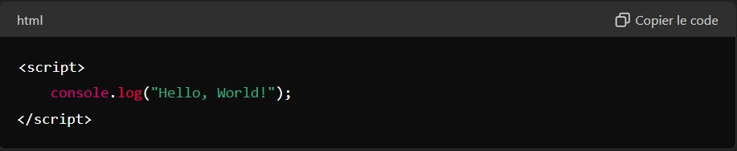
Script externe :
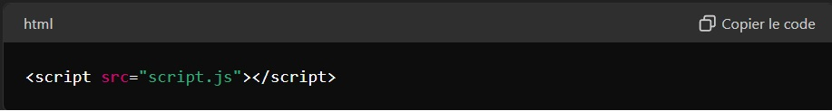
Et dans script.js :
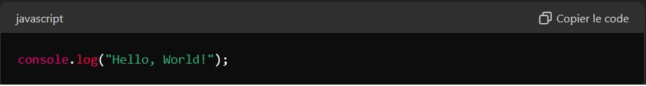
Concepts de base de JavaScript
Variables
Les variables sont utilisées pour stocker des données. JavaScript utilise var, let, et const pour déclarer des variables.
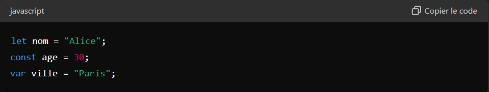
Types de données
JavaScript supporte plusieurs types de données :
Primitifs : number, string, boolean, null, undefined, symbol, bigint
Objets : Objects, Arrays, Functions, etc.
Fonctions
Les fonctions permettent de regrouper des blocs de code réutilisables.
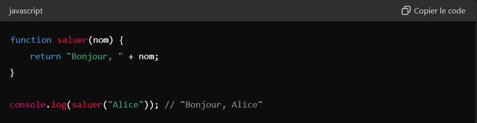
Structures de contrôle
JavaScript utilise des structures de contrôle comme les boucles et les conditions pour gérer le flux de programme.
Conditions :
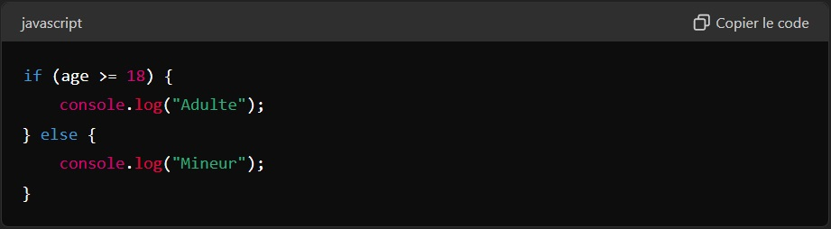
Boucles :
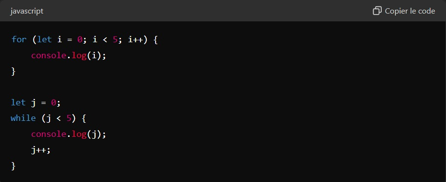
Manipulation du DOM
Le Document Object Model (DOM) représente la structure de la page web. JavaScript permet de manipuler le DOM pour modifier le contenu et la structure de la page.
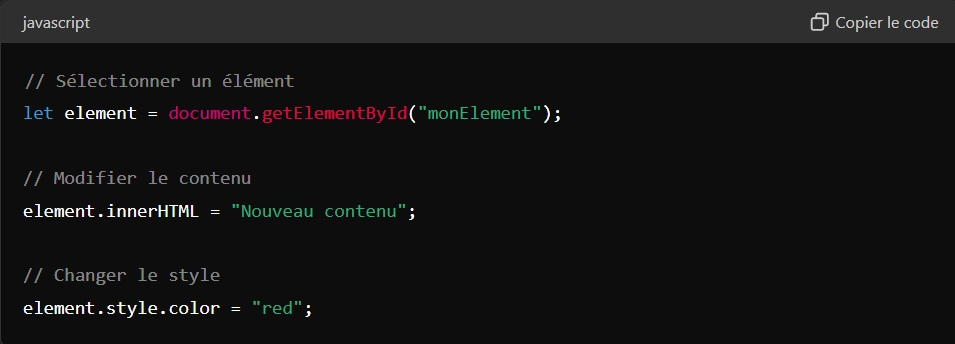
Écouteurs d'événements
Les événements permettent d'exécuter du code en réponse à des actions de l'utilisateur.
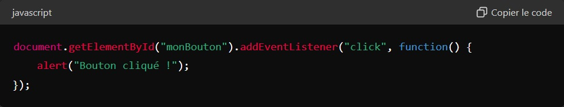
Asynchronicité
JavaScript gère l'exécution asynchrone à l'aide de fonctions de rappel (callbacks), de Promesses, et async/await.
Callback :
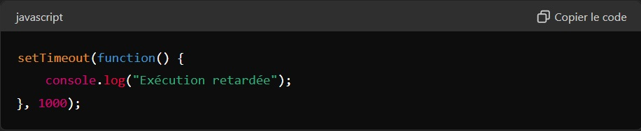
Promesse :
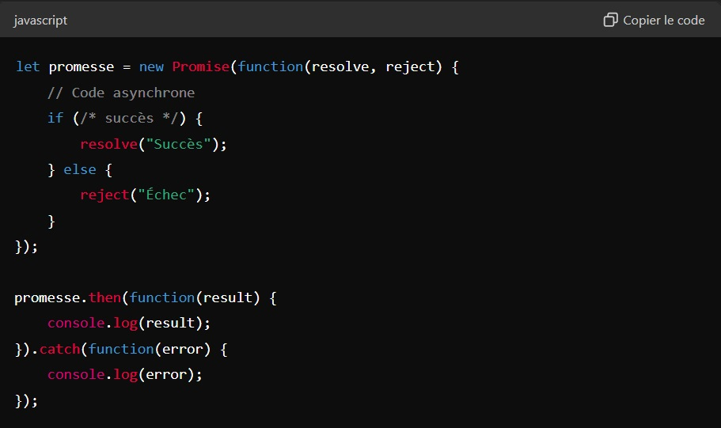
Async/Await :
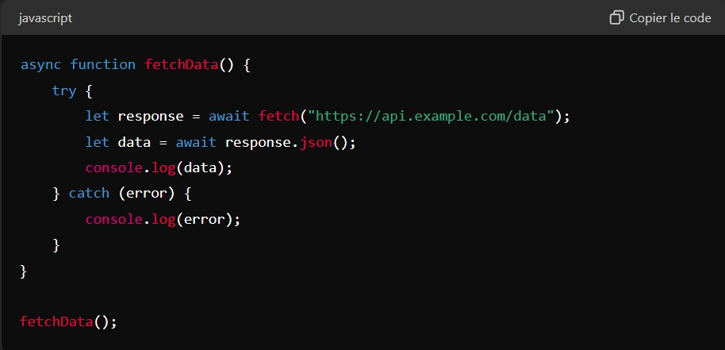
Conclusion
JavaScript est un langage puissant et polyvalent qui joue un rôle essentiel dans le développement web moderne. Il permet de rendre les pages web interactives, de manipuler le DOM, de gérer des opérations asynchrones, et bien plus encore. Combiné avec HTML et CSS, JavaScript permet de créer des expériences web riches et dynamiques.